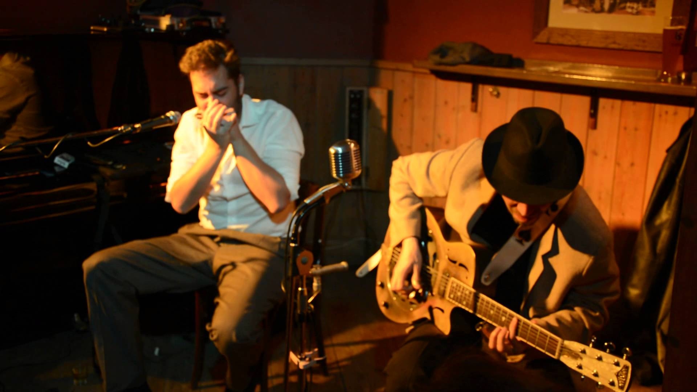
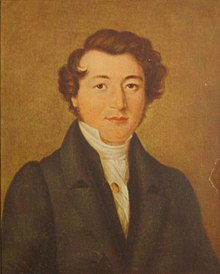
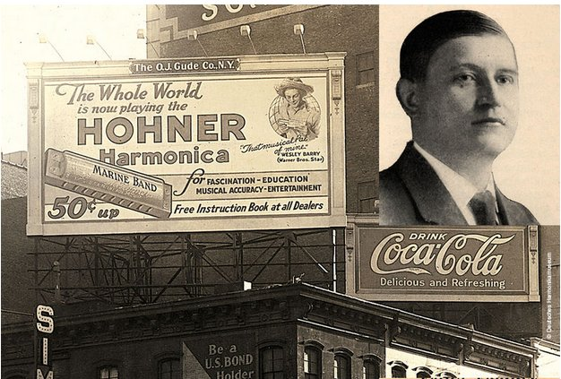

La Armónica.
La historia de la armónica comienza con el emperador chino Nyn-Kwya, quien en el año 3000 aC había inventado un instrumento que funcionaba con lengüetas de metal independientes o “free-reed”, llamado el “sheng”, que es considerado el predecesor más antiguo de la armónica moderna. El “Sheng” llegó a Europa recién en el siglo XVIII, donde ya se venía desarrollando la idea del principio “free-reed” aplicándolo en la creación de instrumentos como el “Reed-organ” o armonio y la concertina.
Pero el verdadero “padre” de la armónica fue un joven relojero alemán de Berlín de 16 años de edad llamado Christian Friedrich Ludwig Buschmann, quien en 1821 registró la primer patente europea para su nuevo invento musical. Buschmann lo llamó “aura” y era un instrumento que consistía en 15 caños o tubos de acero unidos horizontalmente en pequeños canales, que en principio lo usaba para afinar órganos.

El “Arpa de boca”.
Esta “arpa de boca” como llamó él, constaba solamente de lengüetas sopladas y afinadas en forma cromática. Buschmann describió su nuevo instrumento a su hermano como «un nuevo instrumento verdaderamente extraordinario que sólo mide 4 pulgadas (10,16 cm.) de diámetro, pero permite dar 20 notas, con la habilidad de que cada nota sea tan larga como uno desee». El diseño inicial fue ampliamente imitado en Alemania, sufriendo muchas modificaciones y avances.
Uno de los modelos más avanzados entre los primeros diseños fue el de un fabricante llamado Richter. En 1826, Ritcher desarrolló una variante que consistió en 10 agujeros y 20 lengüetas, con soplido separado y cañas de plata montadas sobre uno de los lados de una almohaza de cedro. Los tonos que Richter le dio a este modelo fue usando una escala diatónica, dando origen a la configuración estándar de lo que en Europa llamaban «Mundharmonika» u “órgano bucal”.
 Las primeras armónicas fueron producidas por los relojeros alemanes como una actividad secundaria. Pero, por el año 1850 un joven relojero, había comprado uno de estos nuevos instrumentos y aprendió a fabricarlos perfeccionando su diseño. Este relojero se llamaba Matthias Hohner y fue quien tuvo la idea de incorporarle lengüetas aspiradas al «Mundharmonika» de Richter. Luego de unos años, en 1857, M. Hohner con sólo 24 años de edad, fundó la compañía Hohner en un pequeño pueblo de Trossingen, Alemania. Así Hohner fue el pionero, con su compañía en producir este instrumento a gran escala. En el primer año M.Hohner, su esposa y dos empleados produjeron 650 armónicas. Rápidamente logro contratar más trabajadores para su taller y desarrollar masivas técnicas de producción a tal punto que en los primeros 30 años logró llegar a producir más de un millón de armónicas.
En Estados Unidos donde en 1861 había comenzado la guerra civil, la armónica ya estaba prácticamente instalada en todo el país y muchos soldados, de ambos lados (Norte y sur) tocaban la armónica durante las horas de descanso. Al principio el repertorio consistía en canciones patrióticas, marchas, himnos, “fiddle tunes” (tonadas de violín) y melodías en general simples, utilizando la llamada primera posición o “Straight harp” (tocando en la misma tonalidad que estaba afinada la armónica), sin incluir notas con bending («notas dobladas»).
En el año 1896 Hohner fabricó por primera vez la armónica diatónica de 10 celdas modelo Marine Band, la que prácticamente hasta hoy en día (en su modelo clásico) no se ha modificado. En el año 1996 se fabricó una partida limitada de la Marine Band (con cubiertas metálicas doradas) con motivo del 100 aniversario del modelo. Ha sido en el siglo XX y es hoy en día una de las armónicas diatónicas de 10 celdas más vendidas en el mundo. Desde 1857, la armónica rápidamente se empezó a difundir por toda Alemania, y en pocos años y con la gran emigración de alemanes que hubo llegó a varios rincones del mundo, incluyendo a los Estados Unidos que ya en 1859 se convirtió en uno de los mercados más importantes del mundo para este instrumento, que realmente era económico y fácil de transportar por su tamaño. Los orígenes de la armónica de blues en el Sur permanecen ocultos a pesar de toda la investigación musicológica que se ha hecho sobre el blues. Probablemente el descubrimiento de que en la armónica ciertas notas podían ser bajadas en su afinación por medio del cambio en la presión del aire ejercida sobre las lengüetas (bending) fue algo accidental; sin embargo las “blues“ notes (notas blues) de la escala vocal africana y los gemidos y gritos de lamento de los “field hollers“ ( trabajadores negros del campo) eran exitosamente reproducidos en un nuevo instrumento: la armónica.
Por otro lado, en el lejano oeste y en plena época de la “fiebre del oro” muchos cowboys tocaban la armónica alrededor de las hogueras de campamento o “campfires”. Esto dio origen al estilo de la armónica de western ( tocado en “straight harp”). Por su parte, en el norte surgía un nuevo estilo de música ejecutada en su mayoría por blancos que era el country e incluía generalmente armónica, violín, banjo, guitarra y a veces mandolina.
Cultura popular.
 El country, cuyo origen fue prácticamente paralelo al blues rural del sur, se tocaba en las reuniones y bailes de los granjeros. Por los años 20, ya era muy común escuchar el sonido de la armónica de blues en el sur de Estados Unidos, sobre todo en los estados de Mississippi y Arkansas. En ese momento existía el blues en su estilo rural que tenía como mayor exponente a el gran Sonny Terry, reconocido como el rey de la armónica del estilo folk-blues.
Por otra parte, después que terminó la Segunda Guerra Mundial en 1945, hubo un gran éxodo de población negra del sur rural al norte urbano, especialmente a Chicago. Es así que, desde principios de los años 40 se destacaron cuatro gigantes de la armónica de blues que tocaron y grabaron en Chicago: Sonny Boy Williamson I (John Lee Williamson), Little Walter Jacobs, Big Walter Horton y Alec “Race“ Miller, más conocido como Sonny Boy Williamson II.
Todos ellos juntos fueron los creadores del sonido de la armónica de blues del estilo urbano de Chicago, que ahora era amplificado por medio de un micrófono, a diferencia del blues rural del sur o blues del delta que se tocaba en forma acústica.
En la actualidad, sólo de la compañía alemana Hohner hay alrededor de 60 modelos distintos de armónica, ofreciendo desde el modelo más pequeño: “Little Lady“ de sólo 3 cm y medio de 8 lengüetas al modelo más grande que es una armónica de acordes de 56 cm de largo llamada “Chord Harmonica“ de 384 lengüetas y que permite tocar 48 acordes distintos. Este es el modelo más costoso y elaborado que existe y consta de 1276 partes.
La armónica ha sido el intrumento musical más vendido del mundo durante el siglo XX, y aún lo sigue siendo.
{kind=link}
{kind=link}